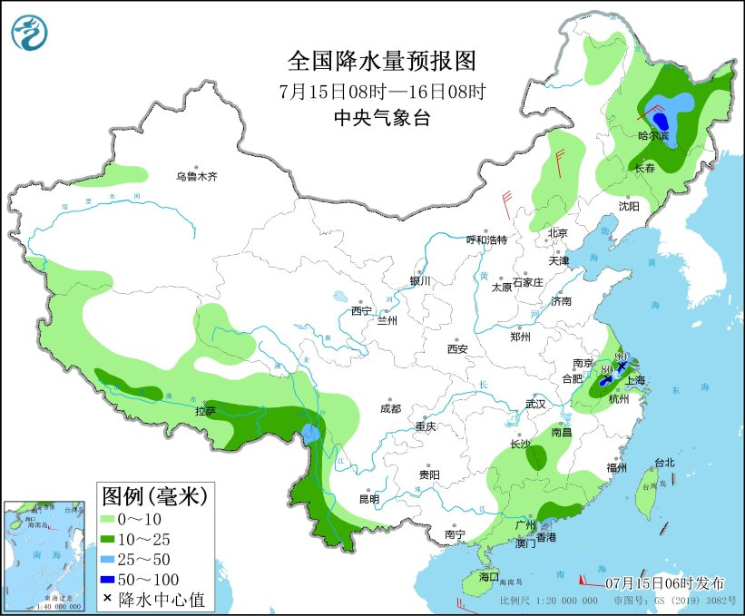
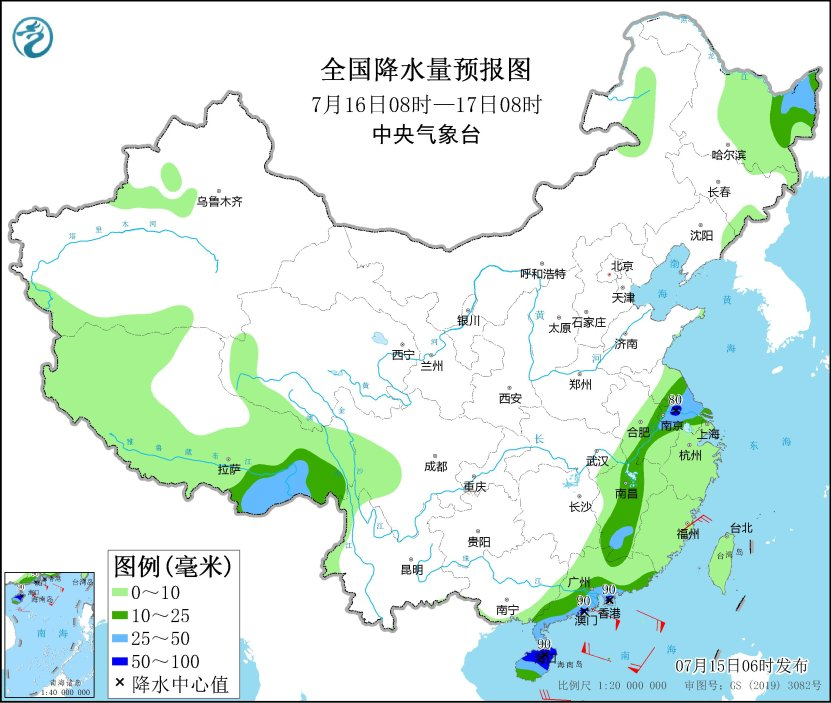
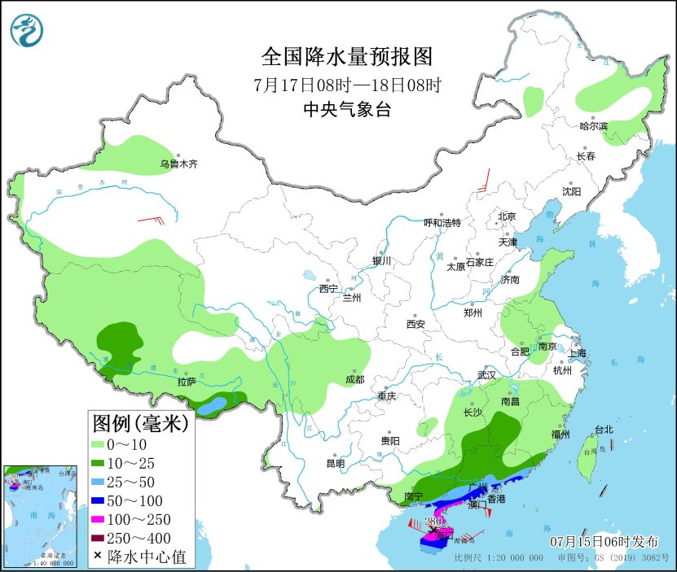

南海热带低压将向西偏北方向移动
江南华南仍有高温天气
摘要：
国内方面， 昨日，黑龙江、吉林、内蒙古东部及湖南、广西、云南等地部分地区出现大到暴雨、 局地大暴雨，南方地区高温持续。预计未来三天，受强降雨影响，广东沿海、海南岛北部及黑龙 江中东部、西藏东南部等地有暴雨灾害中风险，可能发生山洪、地质灾害和城乡积涝； 浙江、福建、江西等地部分地区有高温灾害中风险，关注对人体健康、能源供应、农业生产等的影响。
全球方面， 过去24小时，亚洲东部等地出现较强降雨，非洲北部、阿拉伯半岛持续高温。 预计未来三天，朝鲜半岛、日本北部等地有强降雨，南欧、美国南部等地高 温仍将持续。
一、国内天气情况
1.实况
（1）黑龙江吉林内蒙古等地出现大到暴雨
昨08时至今06时，黑龙江南部、吉林、内蒙古东部、江西北部、湖北西南部、湖南中北部、 贵州西南部、云南东南部和西北部、广西西部等地出现大到暴雨，黑龙江哈尔滨、吉林白城和辽源、 内蒙古兴安盟、湖南张家界和娄底、广西百色、云南红河和 大理等局地大暴雨（106～161毫米）；上述地区最大小时降雨量40～70毫米,云南红河局地80～108毫米。
（2）南方地区高温持续
昨日，华北中南部、江南、华南及新疆等地最高气温有35～39℃；浙江丽水和金华等局地40～40.6℃， 新疆吐鲁番、乌鲁木齐等局地40～45.4℃。
2.重点天气预报
（1）南海热带低压将向西偏北方向移动
南海热带低压的中心今天早晨5点钟位于我国东沙岛南偏东方向约350公里的南海东部海面上， 就是北纬17.9度、东经118.6度，中心附近最大风力有7级（15米/秒），中心最低气压为1000百帕。 预计，该热带低压将以每小时10～15公里的速度向西偏北方向移动，强度逐渐增强，有可能于 今天上午加强为今年第4号台风，并于17日傍晚到18日早晨在海南岛东部到广东西部一带沿海登陆 （台风级或强台风级，35～42米/秒，12～14级），18日进入北部湾，以后趋向越南北部一带沿海（见图1）。 受热带低压影响，15～18日，南海中北部海域将有明显风雨天气，16～18日，华南中南部地区有中到大雨， 南部沿海地区有暴雨或大暴雨。

图1 热带低压未来120小时路径概率预报图（7月15日05时-20日05时）
此外，15日，黑龙江中东部、吉林北部等地有中到大雨， 局地暴雨；15日至16日，江苏南部、安徽东南部、浙江西北部等地有中到大雨， 局地有暴雨；上述部分地区伴有短时强降水、雷暴大风或冰雹等强对流天气。
（2） 江南华南仍有高温天气
15日至16日，江南大部、华南将继续出现35～37℃的高温天气，江南部分地区最高气温可达38～40℃； 21日前后，江南等地将再次出现高温天气。此外，未来10天，新疆大部地区有持续性高温天气，部分地 区可达40℃或以上；17-20日，西北地区东部、内蒙古西部、华北南部和东部将出现35～37℃高温天气。
预计7月15日白天，新疆北部和南疆盆地、内蒙古西部、甘肃西部、河北南部、山东西部、河 南北部和南部、湖北、湖南北部和南部、安徽南部、江西、浙江、福建、广东、广西、海南岛 等地有35～36℃高温天气，其中，新疆准格尔盆地和南疆盆地、江西南部、浙江中西部、福建 大部、广东中东部、广西西部、海南岛东南部等地部分地区最高气温37～39℃，新疆准格尔盆地 南部、吐鲁番盆地和南疆盆地、浙江中部、 福建中部等地局地可达40℃以上（见图2）。 中央气象台7月15日06时继续发布高温黄色预警。

图2 全国高温落区预报图（7月15日08时-20时）
二、全球天气情况
1.实况
（1）亚洲东部等地出现较强降雨
过去24小时，朝鲜半岛、日本本州岛中西部、菲律宾群岛、印度尼西亚加里曼丹岛、 缅甸西部、印度北部、不丹、南欧东部、美国中部等地出现大到暴雨，其中，日本本 州岛西北部、菲律宾群岛等地局地出现大暴雨或特大暴雨。
（2）非洲北部阿拉伯半岛持续高温
过去24小时，非洲北部、阿拉伯半岛、伊朗大部、 阿富汗南部、巴基斯坦大部、印度北部、中亚中东部、 美国南部、墨西哥北部等地出现37℃以上高温天气，部 分地区日最高气温超过42℃。
2.重点天气预报
（1）朝鲜半岛日本北部等地有强降雨
未来三天，朝鲜半岛、日本本州岛中北部、北海道岛的部分地区有中到大雨，其中，朝鲜半岛南部、 日本本州岛北部、北海道岛南部等地有暴雨，局地大暴雨。
（2）南欧美国南部等地高温仍将持续
未来三天，西亚大部、中亚中东部、南亚北部、非洲北部、南欧大部、东欧西部、美国南部 、墨西哥北部等地高温天气仍将持续，上述地区最高气温普遍在37℃以上，局地最高气温可达42℃以上。
三、国内未来三天具体预报
7月15日08时至16日08时， 黑龙江中东部、吉林北部、安徽东南部、江苏南部、浙江北部、 广东南部沿海、云南西部、西藏东南部等地的部分地区有中到大雨，其中，黑龙江南部、安徽 东南部、江苏南部等地局地有暴雨（50～90毫米）。内蒙古东部、黑龙江南部等地部分地区有4～6级风 （见图3）。南海东北部海域将有6～7级、阵风8级的东北风转7～8级、阵风9级的偏南风。

图3 全国降水量预报图（7月15日08时-16日08时）
7月16日08时至17日08时， 黑龙江东北部、安徽南部、江苏中南部、上海北部、江西中东部、 广东南部、海南岛、西藏东南部等地部分地区有中到大雨，其中，广东南部沿海、海南岛中 北部等地局地有暴雨（见图4）。南海西北部海域将有7～9级、阵风10级的偏北风转东南风， 南海东北部海域将有7～9级、阵风10级的偏南风转东南风。

图4 全国降水量预报图（7月16日08时-17日08时）
7月17日08时至18日08时， 湖南南部、江西南部、广东大部、广西东南部等地有大到暴雨， 其中，广东西南部沿海、海南岛北部等地部分地区有大暴雨，海南岛北部等地局地特大暴雨 （250～280毫米）。新疆南疆盆地和东部等地部分地区有4～6级风（见图5）。北部湾将有 6～7级、阵风8级增大到9～10级、阵风11级的偏北风，琼州海峡将有8～9级、阵风10级的西北风， 南海西北部海域将有7～9级、阵风10级的偏东风转偏南风。

图5 全国降水量预报图（7月17日08时-18日08时）
制作： 于超 杨舒楠 鲍媛媛 刘扬 签发：方翀